GE Exclusive Use Only
Direction 5440000, Rev# 5
Signa HDxt Service Methods
Module Version 3.0, Version Date 10/26/10
GE Exclusive Use Only |
This procedure is used to log into Magmon from the Service Browser on the customer's scanner, or from a laptop attached to the customer's network.
Magmon3 was previously configured for network operation using a direct connection between this device and a laptop.
Magmon3 has been successfully communicating over the building network.
Magmon3 is connected to the building network via Magmon3 – J5 port.
Find the IP address assigned to the Magmon3 by pressing Data, then Up repeatedly until the IP Address displays.
Write down the IP Address for use later.
Press Service Mode repeatedly until the display shows Start Web Mode? (Yes/No) Same IP. Press Yes to activate Web Mode.
Connect the laptop to the building network using a CAT5-type network cable.
Open a web browser session on the laptop.
Type the Magmon3's IP address (recorded earlier) into the laptop browser's address bar, and click (Go). The browser should display the Magmon3 Service Login screen.
Go to Login Modes for further instructions.
Use this procedure for these conditions:
First-time setup of the Magmon3.
Magmon3 is using a modem for InSite communication.
No building network connection is available.
Use in place of the building network connection for installing patch software. (See Loading Patches in Utilities.)
Laptop connected directly to Magmon3 – J5 port using a crossover CAT5-type network cable.
Right-click on  (My Network Places) on the laptop's desktop.
(My Network Places) on the laptop's desktop.
Select Properties from the menu. The Network Connections window (Illustration 1) will open.
Illustration 1: Network Connections Window

Disable the wireless network connection (if enabled). Right-click on Wireless Network Connection, and select [Disable].
Double-click Local Area Connection. The Local Area Connection Status window (Illustration 2) will open.
Illustration 2: Local Area Connection Status Window

| NOTE: | Depending on the laptop's configuration, the Local Area Connection Properties window (Illustration 3) may be display. In this case, skip to Step 6. |
Click [Properties] to open the Local Area Connection Properties window shown below.
Select Internet Protocol (TCP/IP), and click [Properties]. The Internet Protocol Properties window (Illustration 4) will open.
Illustration 3: Local Area Connection Properties Window
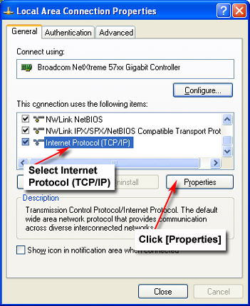
Click Use the following IP address on the Internet Protocol (TCP/IP) Properties window.
Illustration 4: Internet Protocol (TCP/IP) Properties Window
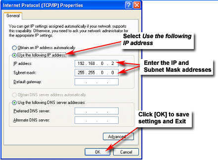
Enter the following addresses as shown in Illustration 4:
Type 192.168.0.2 in the IP address box.
Type 255.255.0.0 in the Subnet mask box.
Click [OK] to save settings and exit.
Click [OK] or [Close] to save the new Local Area Connection Properties (Illustration 5). This may take a moment. Make sure to close the Local Area Connection Status window.
Illustration 5: Local Area Connection Properties Window

Launch Internet Explorer from the laptop's desktop.
In Internet Explorer, select Tools → Internet Options as shown below.
Illustration 6: Internet Explorer Menu Selections
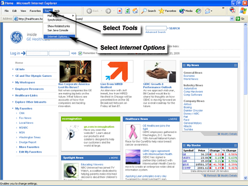
In the Internet Options window, click the Connections tab.
Illustration 7: Internet Options Window
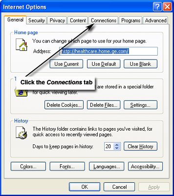
Click [LAN Settings] on the Internet Options window.
Illustration 8: Internet Options Connection Tab

When the Local Area Network (LAN) Settings window opens, make sure the Automatically detect settings and Use automatic configuration script boxes are not selected.
Illustration 9: Local Area Network (LAN) Settings Window

Click [OK] to save the LAN Settings. Click [OK] to save all settings and close the Internet Options window.
Illustration 10: Internet Options Window
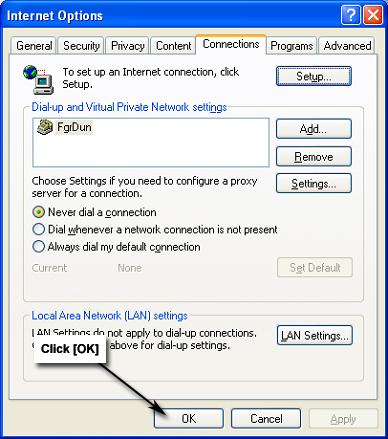
On the laptop, open a Command
Prompt window. In Windows XP, click the  (c:\) icon in the taskbar. (Another option is to go to Start
→
Programs
→
Accessories
→
Command Prompt.)
(c:\) icon in the taskbar. (Another option is to go to Start
→
Programs
→
Accessories
→
Command Prompt.)
Type ping 192.168.0.1<Enter>. If the Magmon3 unit responds (Illustration 11), close the Command Prompt window, and proceed to the next step. If not, recheck your settings.
Illustration 11: Command Prompt Window

Return to Internet Explorer and enter the Magmon3's IP address (192.168.0.1) in the address field. Click (Go). The browser should display the Magmon3 Service Login screen.
Illustration 12: Magmon3 Service Login Screen
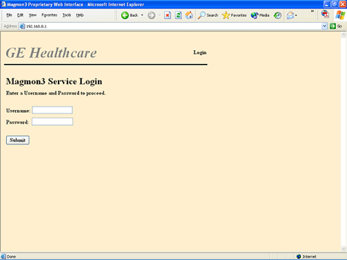
Go to Login Modes for further instructions.
If it is not possible or convenient to connect the laptop to the Magmon3 unit with a network cable, the laptop can be connected with a serial port cable to Magmon3 - J2 and a “PC to PC” interface established. The process for setting up a new connection configuration on the laptop is different between Windows 2000 (Section 3.2) and Windows XP (Section 3.1). Make sure to follow the appropriate setup procedure for your operating system.
| NOTE: | Newer laptops will not have a laptop serial port, connection must be made with a network cable. |
Use a 9-pin null-modem serial cable to connect the laptop serial port to the Magmon3 J2: Laptop jack.
On the laptop, go to the desktop and
right-click on (My Network Places).
Click [Properties] to display the Network Connections window (Illustration 13).
Click Create a New Connection.
Illustration 13: Network Connections Window
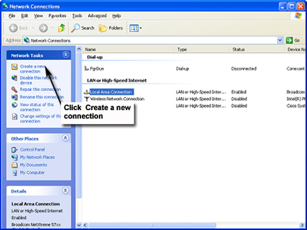
When the New Connection Wizard will opens, click [Next].
Illustration 14: New Connection Wizard Window
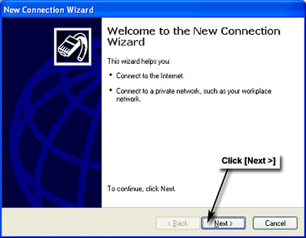
In the Network Connection Type window, select Set up an advanced connection and click [Next].
Illustration 15: Network Connection Type Window
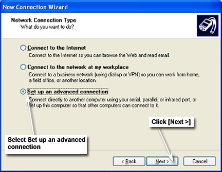
In the Advanced Connection Options window, select Connect directly to another computer, and click [Next].
Illustration 16: Advanced Connection Options Window
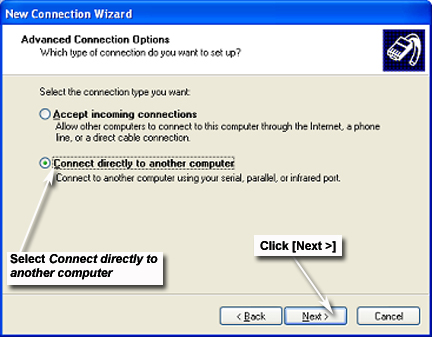
In the Host or Guest? window, select Guest, and click [Next].
Illustration 17: Host or Guest? Window
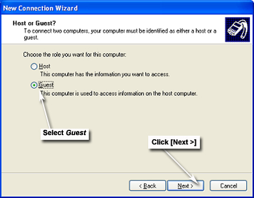
In the Connection Name window, type Magmon3 in the Computer Name field, and click [Next].
Illustration 18: Connection Name Window
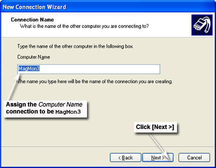
In the Select a Device window, select Communications cable between two computers (COM1) from the drop-down menu, and click [Next].
Illustration 19: Select a Device Window
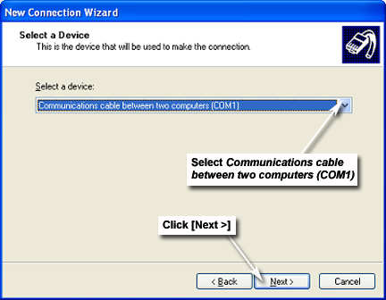
In the Connection Availability window, select Anyone's use, and click [Next].
Illustration 20: Connection Availability Window
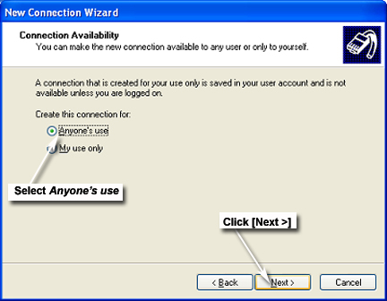
In the Completing the New Connection Wizard window, confirm that the connection is named Magmon3, and click [Finish].
Illustration 21: Completing the New Connection Wizard Window
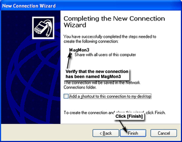
When the Connect Magmon3 window opens, click [Cancel].
Illustration 22: Connect Magmon3 Window
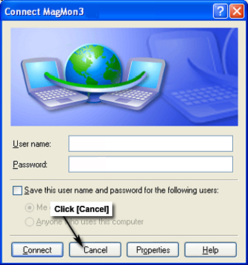
If the Network Connections window (shown below) is not open, repeat Steps 2 and 3 of Section 3.1 to open it.
Illustration 23: Network Connections Window
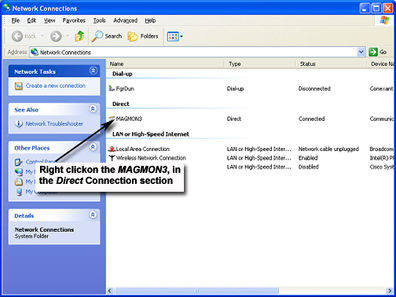
In the Network Connections window, right-click on the MAGMON3 connection (Illustration 23), and select [Properties] from the menu. The Magmon3 Properties window will open.
Illustration 24: Magmon3 Properties Window
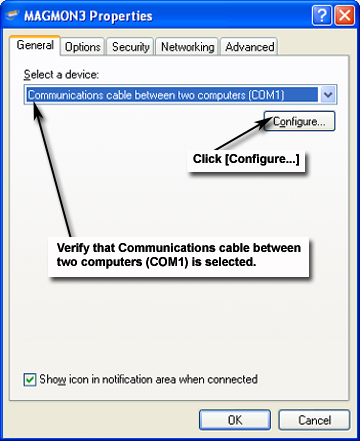
On the Magmon3 Properties window, verify that Communications cable between two computers (COM1) is selected on the General tab, or select this device from the menu if necessary. Click [Configure].
When the Modem Configuration window opens, verify that Maximum speed (bps) is set at 115200, and none of the boxes are selected. Make any necessary changes, and click [OK] to return to the Magmon3 Properties window.
Illustration 25: Modem Configuration Window
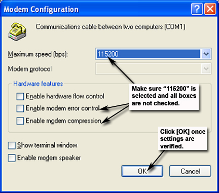
Click the Options tab on the Magmon3 Properties window (shown below), and verify these settings:
Boxes for these Dialog options are selected: Display progress while connecting and Prompt for name and password, certificate, etc.
Redial attempts is set at 3.
Time between redial attempts is set at 1 minute.
Idle time before hanging up is set at never.
Redial if line is dropped box is not selected.
When all settings are correct, click [OK] to confirm and save the settings.
Illustration 26: Magmon3 Options Properties Tab
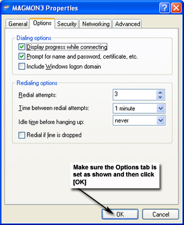
Click the Security tab (shown below), and verify these settings:
Typical (recommended settings) is selected.
Allow unsecured password is selected for Validate my identity as follows.
When all settings are correct, click [OK] to confirm and save the settings.
Illustration 27: Magmon3 Security Properties Tab
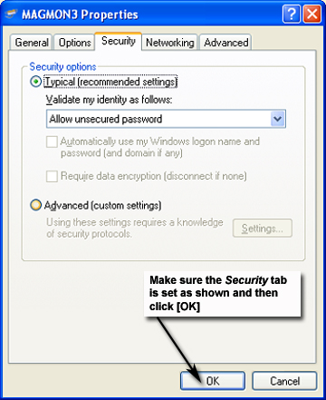
Click the Networking tab (shown below), and verify these settings:
Type of dial-up server I am calling is set to PPP:Windows95/98/NT4/2000, Internet.
Internet Protocol (TCP/IP) is the only item selected in the This connection uses the following items section.
When these settings are confirmed, click [Settings] to further configure the dial-up connection.
Illustration 28: Magmon3 Networking Properties Tab
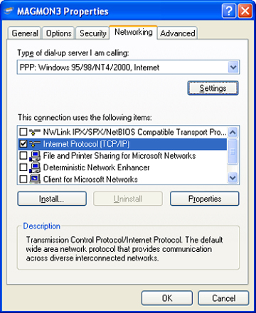
In the PPP Settings window, confirm that Enable LCP extensions is the only box selected. Make any necessary changes, and click [OK].
Illustration 29: Magmon3 PPP Settings Window
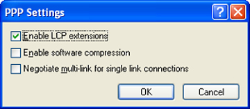
While still on the Networking tab, click [Properties] to open the Internet Protocol (TCP/IP) Properties window (shown below).
Verify these items are selected:
Obtain an IP address automatically
Obtain DNS server address automatically
When all settings are correct, click [OK].
Illustration 30: Magmon3 TCP/IP Properties Window
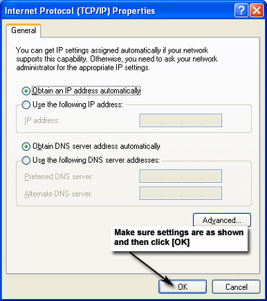
Click the Advanced tab, and verify that none of the boxes are selected on this tab.
Illustration 31: Magmon3 Advanced Properties Tab
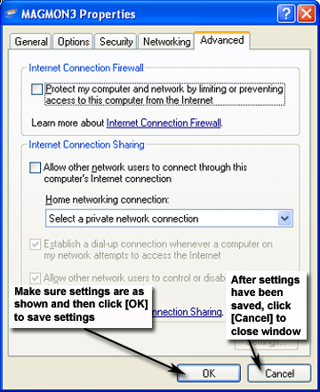
When review of the Magmon3 Properties settings are completed, click [OK] (Illustration 31) to save them. (It may be necessary to click [Cancel] to close the window.)
If the Network Connections window (shown below) is not open, repeat Steps 2 and 3 of Section 3.1 to open it.
Illustration 32: Network Connections Window
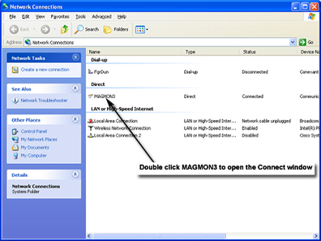
In the Network Connections window (Illustration 32), double-click MAGMON3 to open the Connect window.
Illustration 33: Magmon3 Connect Window
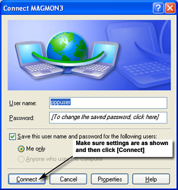
Enter the following information in this window:
User name:pppuser
Password:insite
Select the Save this user name and password for the following users box.
When all settings are correct, click [Connect]. A pop-up window will show the connection status.
When connected to the Magmon3, open Internet Explorer on the laptop. Type 10.0.0.5 into the address window and click (Go). The Magmon3 Service Login screen (Illustration 34) will display.
Illustration 34: Magmon3 Service Login Screen
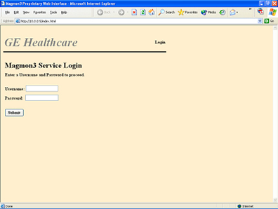
Go to Login Modes for further instructions.
Use a 9-pin null-modem serial cable to connect the laptop serial port to the Magmon3 J2: Laptop jack.
On the laptop, go to the desktop and
right-click (My Network Places).
Click [Properties] to open the Network and Dial-Up Connections.
Illustration 35: Network and Dial-Up Connections Window
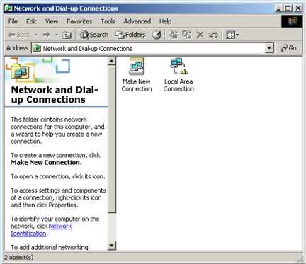
Click [Make New Connection].
When the New Connection Wizard window displays, click [Next].
Illustration 36: Network Connection Wizard Window
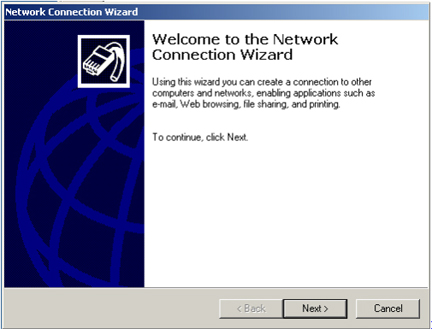
In the Network Connection Type window, select Connect directly to another computer, and click [Next].
Illustration 37: Network Connection Type Window
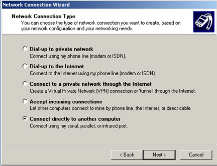
In the Host or Guest? window, select Guest, and click [Next].
Illustration 38: Host or Guest? Window
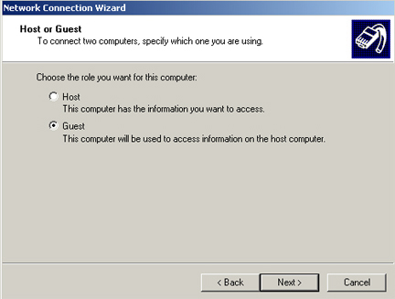
In the Select a Device window, select Communications Port (COM1) from the menu, and click [Next].
Illustration 39: Select a Device Window
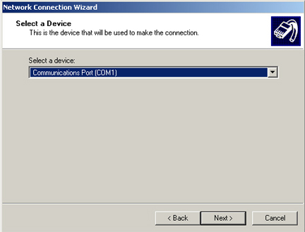
In the Connection Availability window, select For all users, and click [Next].
Illustration 40: Connection Availability Window
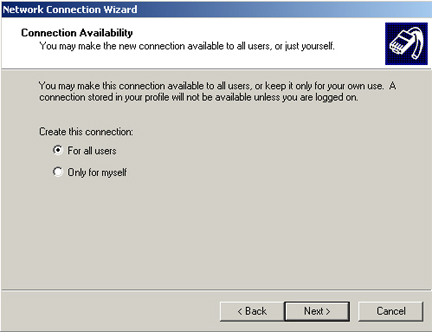
In the Completing the New Connection Wizard window, enter the name MagMon3 and click [Finish].
Illustration 41: Completing Network Connection Wizard
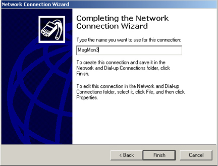
When the Connect Magmon3 window displays, click [Cancel].
Illustration 42: Connect Magmon3 Window
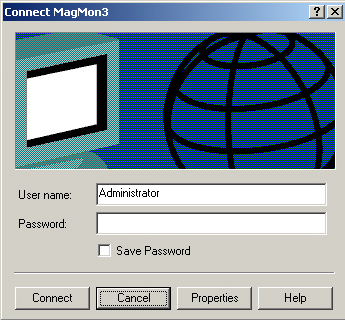
In the Network and Dial-Up Connections window, right-click on the MagmMon3 connection, and select Properties from the menu to open the Magmon3 Properties window.
Illustration 43: Network and Dial-Up Connections Window
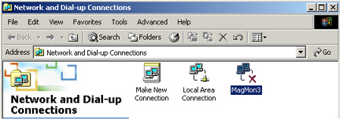
When the Magmon3 Properties window displays, select Communications cable between two computers (COM1) from the drop-down menu, and click [Configure].
Illustration 44: Magmon3 Properties Window
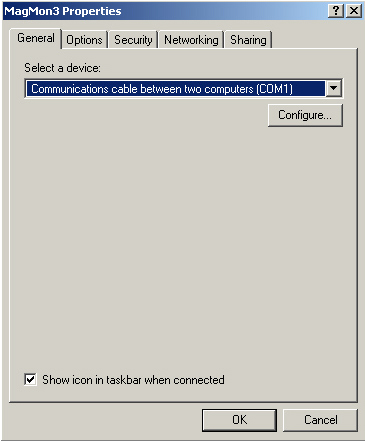
When the Modem Configuration window displays, verify that Maximum speed (bps) is set at 115200, and that none of the boxes are selected. Make any necessary changes, and click [OK] to return to the Magmon3 Properties window.
Illustration 45: Modem Configuration Window
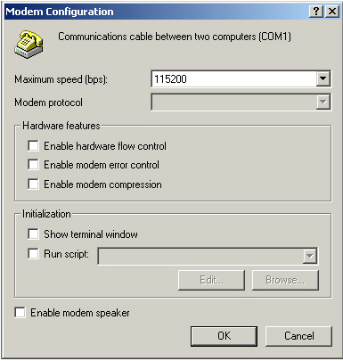
Click the Options tab (shown below), and verify these settings:
Display progress while connecting and Prompt for name and password, certificate, etc. boxes are selected.
Include Windows logon domain box is clear.
Redial attempts is set at 3.
Time between redial attempts is set at 1 minute.
Idle time before hanging up is set at never.
Redial if line is dropped box is not selected.
When all settings are correct, click [OK] to confirm and save the settings.
Illustration 46: Magmon3 Options Properties Tab
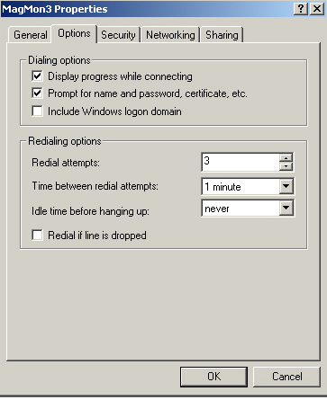
Click the Security tab (shown below), and verify these settings:
Typical (recommended settings) is selected.
Allow unsecured password is selected under Validate my identity as follows.
When all settings are correct, click [OK] to confirm and save the settings.
Illustration 47: Magmon3 Security Properties Tab
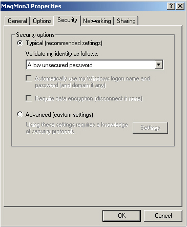
Click the Networking tab and verify these settings:
Type of dial-up server I am calling is set to PPP:Windows95/98/NT4/2000, Internet.
Internet Protocol (TCP/IP) is the only item selected in the Components checked are used by this connection section.
When these settings are confirmed, click [Settings] to further configure the dial-up connection.
Illustration 48: Magmon3 Networking Properties Windows
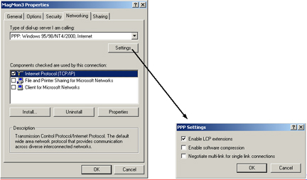
In the PPP Settings window (Illustration 48), confirm that Enable LCP extensions is the only box selected. Make any necessary changes, and click [OK].
While still on the Networking tab (Illustration 48), click [Properties] to display the Internet Protocol (TCP/IP) Properties window.
Illustration 49: Magmon3 TCP/IP Properties Window
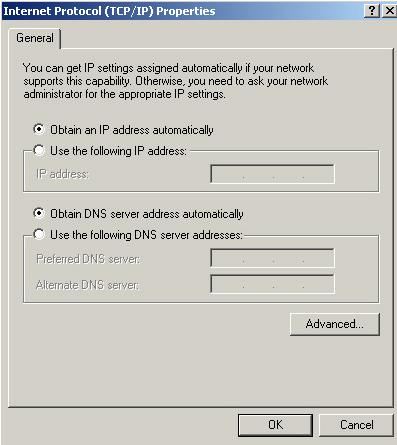
Verify the following items are selected:
Obtain an IP address automatically
Obtain DNS server address automatically
When all settings are correct, click [OK].
Click the Sharing tab on the Magmon3 Properties window, and verify none of the boxes are selected.
Illustration 50: Magmon3 Sharing Properties Tab
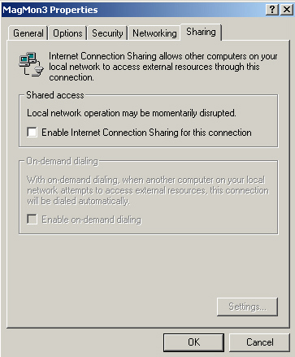
When the review of the Magmon3 Properties settings are completed, click [OK] to save changes and close the window.
In the Network and Dial-Up Connections window (shown below), double-click MAGMON3 to display the Connect window.
Illustration 51: Network and Dial-Up Connections Window
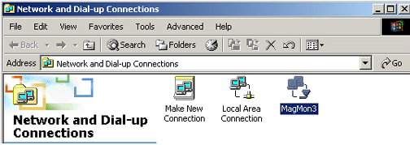
Enter the following information in the Connect window:
User name:pppuser
Password:insite
Select the Save password box.
Illustration 52: Connect Magmon3 Window
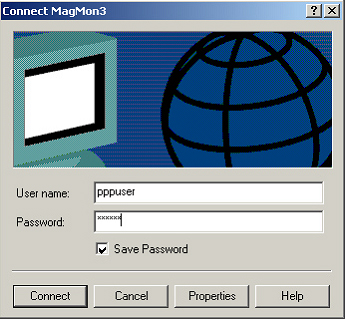
When all settings are correct, click [Connect]. A pop-up window will show the connection status.
When connected to the Magmon3, open Internet Explorer on the laptop. Type 10.0.0.5 in the address field, and click (Go). The Magmon3 Service Login screen (shown below) will display.
Illustration 53: Magmon3 Service Login Screen
Go to Login Modes for further instructions.